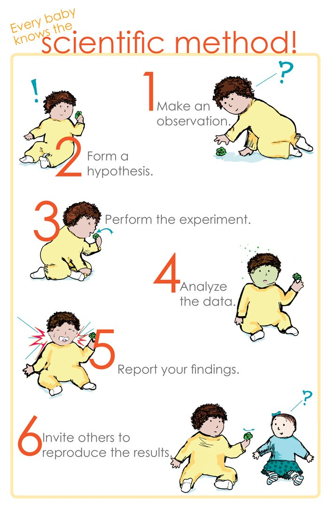
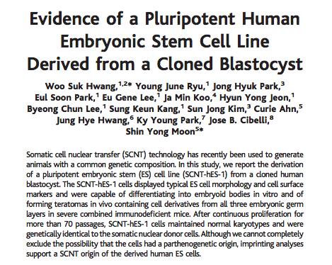
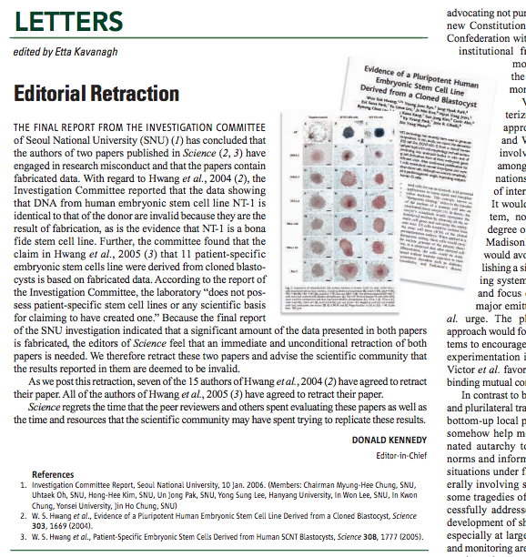
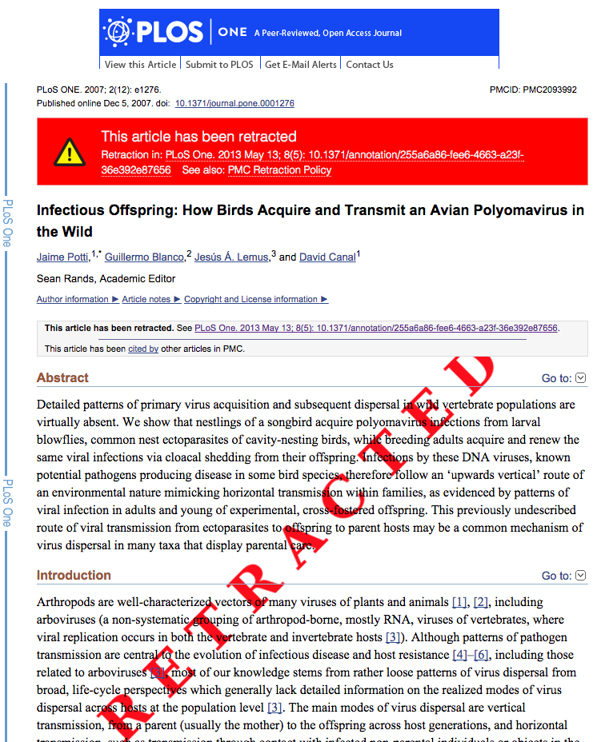
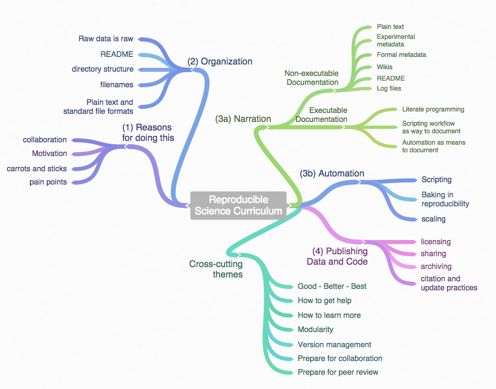

Reproducibilidad en Ciencia
Ecoinformática. Curso 2014-2015
Antonio J. Pérez-Luque
(RAE)
Ciencia: Conjunto de conocimientos obtenidos mediante la observación y el razonamiento, sistemáticamente estructurados y de los que se deducen principios y leyes generales
La ciencia es el conocimiento obtenido mediante la observación de patrones regulares, de razonamientos y de experimentación en ámbitos específicos, a partir de los cuales se generan preguntas, se construyen hipótesis, se deducen principios y se elaboran leyes generales y sistemas organizados por medio de un método científico

Crisis de Reproducibilidad

Fraude científico


Retracción



- La investigación no son sólo los resultados que se publican, sino que es el conjunto de programas, código, y datos utilizados para producir los resultados (Gandrud 2014)
Meta-analysis on the effects of temperature on plant phenology

¿Qué entendemos por
Reproducible Science?
Research results are replicable if there is sufficient information available for independent researchers to make the same findings using the same procedures

¿Porqué ha de ser
reproducible
la investigación?
Por la ciencia
- Estándar
- Los resultados de una investigación no pueden considerarse "contribuciones genuinas" al conocimiento humano hasta que no sean verificadas (Stodden 2009).
- Demarcación entre ciencia y no-ciencia

Por la ciencia
- Evitar duplicación de esfuerzos
- Disminuir la cantidad de tiempo empleado para colectar datos, manipular datos, etc.
- Ayuda a avanzar en la generación de nuevo conocimiento (Wolkovich et al. 2012)

Por los investigadores (por ti)
- Mejorar Habitos de trabajo
- Aumentar la facilidad para detectar errores (documentar código)
- Accesibilidad de los pasos llevados a cabo (re-usabilidad)
- Efectividad (evitar duplicidad de esfuerzo)
Mejorar Trabajo en equipo
- Implementar la reproducibilidad de un proyecto facilita a tus colaboradores (presentes o futuros) ejecutar parte del mismo
Facilitar los cambios
- Reproducir tus resultados en el futuro próximo (re-análisis, cambios en figuras, etc.)
Mayor impacto de nuesta investigación
- La investigación que es reproducible contiene mas información (código, acceso a los datos, etc) y por tanto, mas razones para ser usada (y citada, i.e. Piwowar et al. 2007)
Aplicar técnicas de reproducibilidad (o al menos los principios) puede hacer que tu investigación sea mas efectiva y mas fácil

¿Cómo hacer que nuestra investigación
sea mas reproducible?
Flujo de Trabajo Científico
The old-(traditional) way

Comunicamos los resultados
- ¿Qué análisis has llevado a cabo para generar una figura? ¿Cómo has llevado a cabo el análisis de las medias? ¿Has tenido en cuenta la correlación entre las variables? ...
- ¿Qué datos has utilizado? ¿Has llevado a cabo un filtro previo de los datos? ¿de qué tipo? ¿Has utilizado valores brutos o valores agregados? ...
- ¿Has probado a llevar a cabo el análisis utilizando la media armónica en vez de la media aritmética? ¿Qué resultados obtendríamos si agregamos los valores por meses en vez de por estaciones? ...
- ¿Podrías incluir en la figura además unas barras de error? ¿Podrías incluir en la tabla los I.C. al 99% en vez de al 95%?
Este flujo de trabajo está roto

Consejos prácticos
1. Document everything!
2. Everything is a (text) file
3. All files should be human readable
4. Explicity tie your files together
5. Have a plan to organize, store, and make our files available

Algunas reglas sencillas (Sandve et al. 2013)
Rule 1. For every result, keep track of how it was produced
- Si un resultado puede ser de potencial interés, mantén un registro de como se ha producido.
Mínimo: registrar detalles suficientes sobre los programas, parámetros y procedimientos manuales para ser capaz (al menos tú) de reproducir el resultado cuando pase un tiempo
Rule 2. Avoid manual data manipulation steps
- Los procedimientos manuales son ineficientes, propensos a los errores y difíciles (sino imposibles) de reproducir.
- Sustituir modificación manual de archivos por uso de comandos o pequeños scripts (mejor comprensión + track errores + fácilmente reproducibles (1-click))
Mínimo: Si la utilización de operaciones manuales no pueden evitarse en tu análisis, anota al menos los archivos que son modificados o movidos y para que propósito
Rule 3. Archive the exact versions of all external programs used
- Programas y versiones
Mínimo: Anotar nombres y versiones de los programas utilizados (metadatos)
sessionInfo()

sink("sessionInfo.txt")
sessionInfo()
sink()
packrat: A Dependency Management System for Projects and their R Package
Dependencies
Rule 4. Version Control all custom scripts
- Registrar los cambios realizados en los scripts que utilizamos
Mínimo: Archivar copias de los scripts cada vez que hagamos cambios en ellos, para mantener un registro exahustivo de los cambios que hemos realizado en ellos.
Rule 5. Record all intermediate results, when possible in standardized formats
- Tener acceso a resultados intermedios es de gran valor:
- Un vistazo rápido de resultados intermedios puede servirnos para revelar discrepancias, falsas asunciones, etc. que no podemos ver en los resultados finales.
- Parámetros arbitrarios en pasos intermedios
Mínimo: Guardar archivos y resultados intermedios (siempre que el espacio no nos limite)
Rule 6. For analysis that include randomness, note underlying random seeds
- No reproducible.
# Crea un conjunto de datos
x <- seq(0,30, by=0.5)
head(x)
## [1] 0.0 0.5 1.0 1.5 2.0 2.5
# Toma una muestra de 5 individuos
sample(x, 5)
## [1] 16.0 0.0 7.0 9.5 4.0
sample(x, 5)
## [1] 22.5 25.5 6.5 18.0 19.0
Rule 6. For analysis that include randomness, note underlying random seeds
- Reproducible.
set.seed(1)
sample(x, 5)
## [1] 8.0 11.0 16.5 26.0 5.5
# Repite la operación
set.seed(1)
sample(x, 5)
## [1] 8.0 11.0 16.5 26.0 5.5
- Semilla inicial en aleatoridad (re-sampling, bootsprating, Monte-Carlo, etc)
Mínimo: Anotar los pasos del análisis que implican aleatoridad (saber donde encontraremos discrepancias)
Rule 7. Always store raw dat behind plots
- Capacidad de regenerar figuras de forma sencilla

- Realizar gráficos en R (script), nos permite regenerarlos en 1 solo paso
Mínimo: Anotar que datos forman parte de la base de una figura y como podemos generar esos datos.
Thank You
For more information you can contact.
gplushttp://plus.google.com
twitterhttp://twitter.com/ajpelu
Sistema de Control de Versiones
¿Qué es el control de versiones?
Lenguajes para el control de versiones
Chacon S. & Straub (2014). ProGit book. Apress
Tutorial Git
aqui
Crear un repositorio nuevo
- Crea un directorio nuevo y ábrelo
mkdir <nombre_directorio>
mkdir datos
- Para iniciar un repositorio utilizamos el comando
git init
git init datos
Clonar un directorio
- Repositorio local
git clone /path/to/repository
* Repositorio remoto (`GitHub`)
git clone username@host:/path/to/repository
Esto sirve
mas diapos
https://github.com/ramnathv/user2014-idocs-slides
- notas karthik: A reproducibility crisis how science goes wrong
References and Resources
Gandrud C (2014) Reproducible research with r and rstudio. R Series. Chapman & Hall/CRC.
King G (1995) Replication, replication. PS: Political Science and Politics, 28(3): 444 - 452. doi: 10.2307/420301
Michener WK, Brunt JW, Helly JJ, Kirchner TB, Stafford SG (1997). Nongeospatial metadata for the ecological sciences. Ecological Applications, 7(1): 330–342. doi
Peng RD (2011) Reproducible research in computational science. Science, 334: 1226 - 1227. doi: 10.1126/science.1213847
Piwowar HA, Day RS, Fridsma DB (2007) Sharing detailed research data is associated with increased citation rate. PLoS ONE 2(3): e308. doi: 10.1371/journal.pone.0000308
Sandve GK, Nekrutenko A, Taylor J, Hovig E (2013) Ten Simple Rules for Reproducible Computational Research. PLoS Comput Biol 9(10): e1003285. doi: 10.1371/journal.pcbi.1003285
Stodden V (2009) The legal framework for reproducible scientific research. Computing in Science & Engineering, 11(1): 35 - 40. doi: 10.1109/MCSE.2009.19
Wolkovich EM, Regetz J & O'Connor MI (2012) Advances in global change research require open science at the individual-level. Global Change Biology, 18, 2102–2110, doi: 10.1111/j.1365-2486.2012.02693.x
The economist Ebd
Reproducibility in Science. A Guide to enhancing reproducibility in scientific results and writing. R-OpenSci et al
Reproducible Science Curriculum
Ushey K, McPherson J, Cheng J & Allaire JJ (2014) packrat: A Dependency Management System for Projects and their R Package. R package version 0.4.2-1, http://CRAN.R-project.org/package=packrat